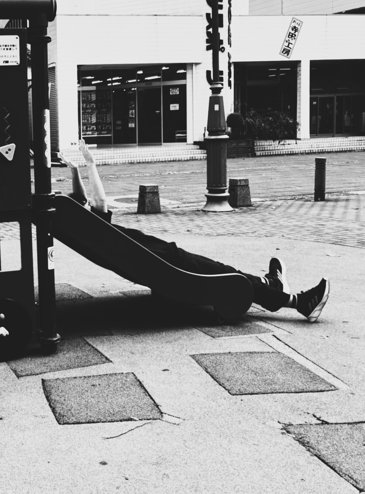
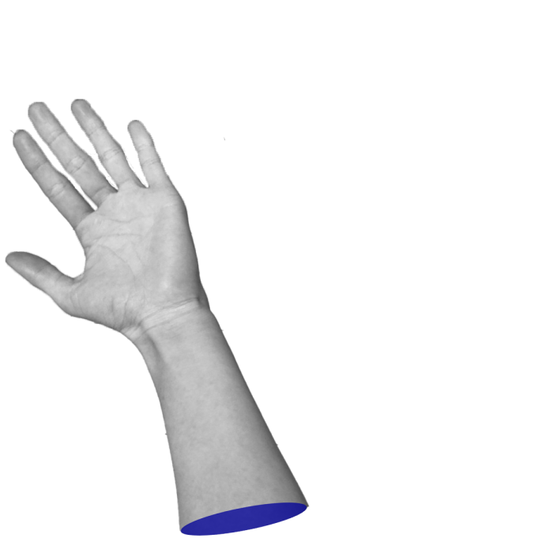

ドーモ！私の名前は太田和毅(ota kazuki)、工学部情報システム工学専攻です！
普段は何をしても三日坊主になってしまうのですが、
この授業を含め、大学生活の中で少しでも何かを身につけたいと思っています！
最近はSley the spireというゲームにハマっています！とても面白いのでぜひやってみてください！
世界中のラジオを聴くことができるWebマップです！
地球儀を回して、気になる場所をクリックするだけで、その場所のラジオが聴けます！
海外のラジオなんかにも簡単にアクセスできるところが魅力的だと思いました！
知ってる人も多いと思いますが、これは世界中のどこかにランダムで配置される
Googleストリートビューの場所を当てるゲームです！
どこにいるのか、周りの建物や看板などから推測して、地図上で答えを選びます！
地図と関連して面白いサイトといえばこれだなと思いました。
単純にゲームとしても面白く、なおかつ地理の勉強にもなるところが好きです！